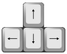

Zoomable Number Line
Click on number line to zoom in, shift-click to zoom out.
Click at left or right to scroll.
Learn About Numbers
See that numbers behave the same, whether they are 1, 2, 3, or 10, 20, 30, or 0.01, 0.02, 0.03.
Learn about decimals:
- Zoom in and look at: 0.6, 0.7, 0.8, 0.9, 1.0, 1.1, ...
- Then ask: what is 0.9 + 0.1 ?
Do the same after zooming in further:
- What is 0.09 + 0.01?
- What is 0.19 + 0.01?
- What is 0.99 + 0.01?
You can see how decimal place values work and get a feel for "infinite" sub-divisibility (but this tool gets into trouble around 30 decimal places).
Using
Click on number line to zoom in, shift-click to zoom out. It will zoom from where you click.
Click at left or right to scroll.
|  |
Or you can use your keyboard's arrow keys. |
Try this:
- Use the "right" key, you will see the counting numbers whizz past.
- Stop when you reach 100.
- Go back to zero (press the reset button).
- Zoom in to show 0.1, 0.2, 0.3, ...
- Now try tracking right. The tenths whizz by.
- How long does it take to reach 100 now?
- Try zooming in to 0.01, 0.02, 0.03, ...
- How long does it take to track across to 100 now (if you have the patience!) ?
How much better to realise that you can zoom out a level and go up in tens. Then you can zoom in so that you are at 100.00
Test yourself. Start at 0. Use the zoom and left/right to find these numbers:
- 3.4
- 17.85
- −17.85
- 100.00357
Race To 100.00357
Challenge your friends! Start at 0 (press the '0' button), then see how fast you can get to 100.00357 (you must see that number on the screen).
Least Moves
How many moves does it take to find a number?
Not against the clock but by counting the number of moves you make.
|
Use just the arrow keys and try to find the least number of key-presses to reach a number (Note: A count of your keystrokes is in the bottom corner.) |
How many moves does it take you to reach:
- 3.4 (it took me 7 moves)
- 22.45 (it took me 18 moves)
- 100.00357 (it took me 51 moves)